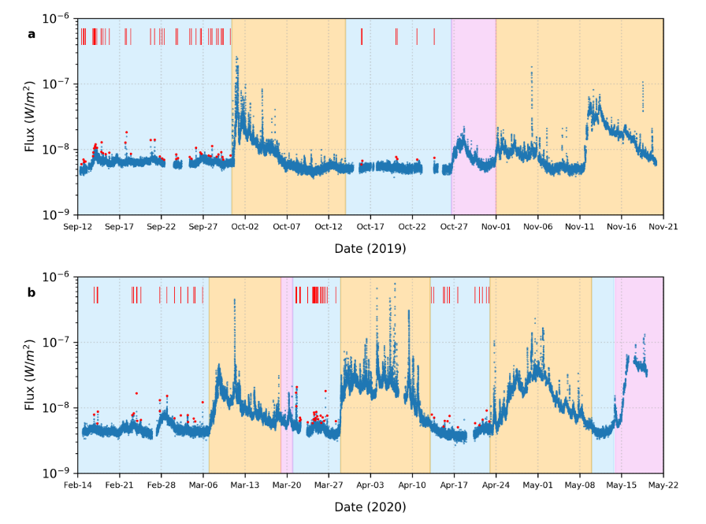
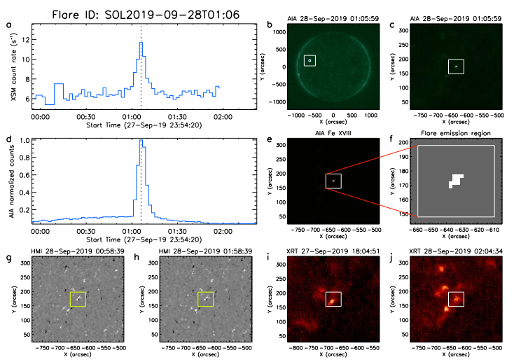

Deciphering The Mysteries of The Quiet Sun Explosions
XSM onboard Chandrayaan 2 observed the Sun during its minimum activity period in 2019-2020. Using this data, the researchers have for the first time detected a very large number of small scale explosions, called microflares, happening on the Sun. The physical parameters of the microflares have been calculated and their spatial location is also detected using various satellites. The study also gives evidence that such small scale heating events occur everywhere on the Sun and they contribute to coronal heating.
The outer atmosphere (the corona) of the Sun poses a long standing mystery regarding its temperature. The solar corona is composed of plasma (ionised gas) that emits strongly in X-rays and ultraviolet radiation. Its temperature exceeds a million degree kelvin, while the visible surface (the photosphere) is at 6000K. One of the theories to understand the so-called ‘coronal heating problem’ proposes the occurrence of a large number of small scale explosions (known as microflares and nanoflares) on the Sun. It is known that these flares are a manifestation of the magnetic field of the Sun that is generated in its interior. But the Sun’s magnetic field is not constant, it varies with an average period of 11 years, which is known as the solar cycle. Approximately every 11 years, the Sun’s magnetic field reverses. In other words, the north pole becomes the south pole, and vice versa. The flip of the poles is an end product of the slow evolution of Sun’s magnetic field over time. As the cycle progresses, all of the Sun’s activities related to its magnetic field (such as sunspots, flares, coronal mass ejections) builds to a maximum (when the magnetic field reverses). Then the Sun settles back down to a minimum, before the whole cycle starts again. The Sun was in a very low state of activity during the minima of solar cycle 24 covering the year 2019. It was in fact the quietest the Sun has been in the last 100 years!
During this quiet period of the Sun, at the mid of the year 2019, Chandrayaan 2 was launched with the several instruments/payloads to observed our moon and the Sun. Among them CLASS is an instrument to understand the abundance of elements present on the moon. But this requires knowledge of the X-rays emitted from the Sun. Thus, the orbiter also carried an instrument called Solar X-ray Monitor (XSM). XSM observed the Sun during its deepest minima of solar cycle 24, covering the year 2019-2020 with a good temporal and energy resolution. Using observations during this time, Santosh Vadawale and his team has uncovered some fascinating information about the quiescent Sun. They have shown that during this period small scale transients, so-called microflares (smaller counterpart of the conventional solar flares) are occurring everywhere on the solar disk.
Solar flares are eruptions of electromagnetic radiation of all wavelengths from the Sun. They last from a few minutes to a few hours. Flares are classified depending on the energy they release during its peak in the soft X rays. Though the number of large flares increase with the progress of the solar cycle, this study suggested that small flares, called microflares, keep exploding on the Sun at all times. Though the definition of microflares has varied though the years due to the sensitivity of the instrument, in this study flares having a peak flux below 10-8 W/m2 are considered as microflares. During this period of extremely quiet solar corona when no active regions were present on the disk, Santosh Vadawale and team identified a total of 98 microflares from 76 days. The microflares are marked in the lightcurve (Figure 1). Most of the microflares were seen to behave similar to larger flares having a fast rise and a slow decay. Some microflares did not follow this behaviour possibly due to blending of multiple microflares or they intrinsically have a different origin. The temperature and emission measure of these microflares are determined. Temperature tells how hot the plasma gets during the explosion while the emission measure gives an idea about the density of plasma emitted at that particular temperature. The temperature is found to be between 3-6 MK and the emission measure is in the order of 1046 cm-3.

Figure 1: XSM lightcurve during the period of deepest solar minima of the past century. Red vertical lines indicate the detected microflares outside the conventional active regions. Image source: S.Vadawale et al., 2021.
The XSM microflare locations are identified in the extreme ultraviolet images obtained from NASA’s ‘Solar Dynamics Observatory’ and from the X-ray images obtained by the Japanese HINODE X-ray Telescope. Most microflares were seen to be associated with X-ray Bright Points. ‘Solar Dynamics Observatory’ HMI magnetograms were used to analyse the corresponding photospheric magnetic field. They observed the microflares to be associated with magnetic bipolar regions having weaker field strengths, which indicates magnetic reconnection happening at smaller scales (Figure 2).

Figure 1: Identification of the location of one of the XSM microflares with the 1–5 keV light curve shown in panel (a). Flare location is marked on the SDO AIA 94 Å full disk image in (b) and a 5’ × 5’ cutout is shown in panel (c). Panel (d) shows AIA 94 Å light curve for the flaring pixels as shown in panel f. FeXVIII image of the flare location is shown in panel (e) and the map of pixels of the flaring plasma based on FeXVIII emission is given in panel (f). Available synoptic HMI magnetograms and XRT Be-thin images nearest to the flare peak time are shown in panels g-j. Credit: S.Vadawale et al., 2021.
This is also the first statistical survey of X-ray microflares outside active regions. By plotting the frequency distribution of microflares, the team has given evidence for the hypothesis that small scale heating events occur everywhere on the Sun and they contribute to coronal heating.
First Author: Santosh Vadawale
Co-authors: N. P. S. Mithun, Biswajit Mondal, Aveek Sarkar, P.Janardhan, Bhuwan Joshi, Anil Bhardwaj, M. Shanmugam, Arpit R. Patel, Hitesh Kumar L. Adalja, Shiv Kumar Goyal, Tinkal Ladiya, Neeraj Kumar Tiwari, Nishant Singh and Sushil Kumar
First author’s Institution: Physical Research Laboratory, Ahmedabad, Gujarat-380 009, India